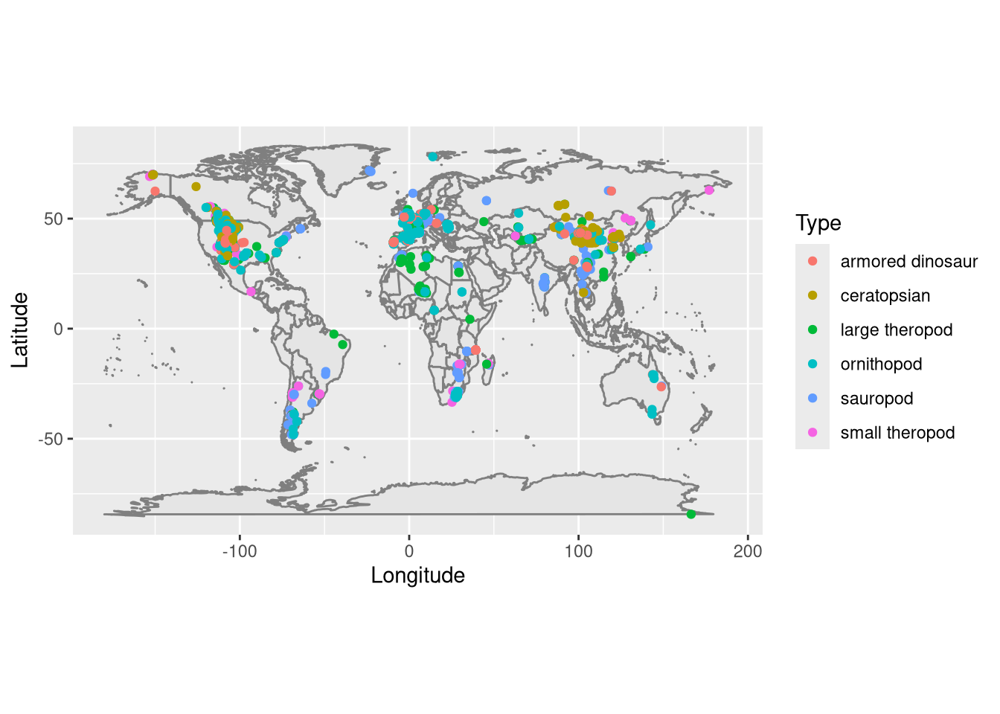
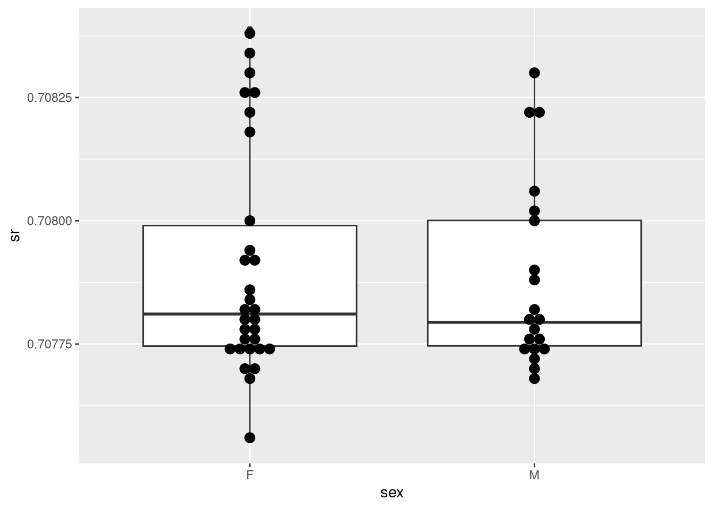
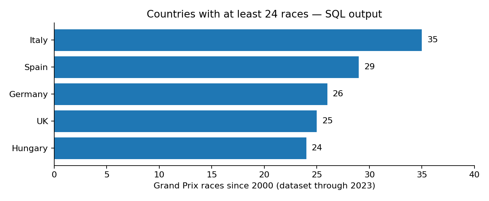
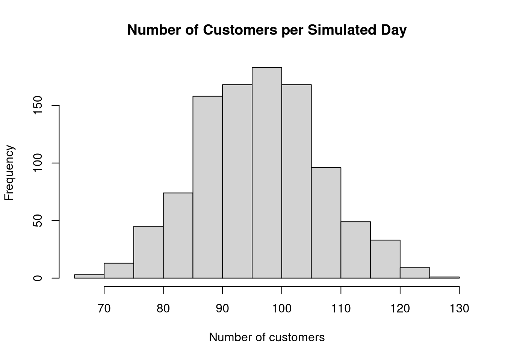
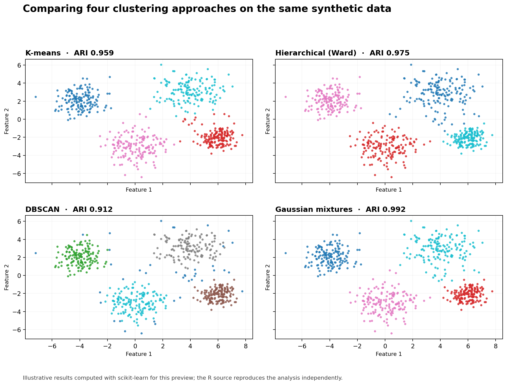

Real assignment · R, maps, ggplot2
Dinosaur fossil explorer
Cleaned 4,951 fossil records and visualised locations and diet categories.
Five fast-to-browse projects spanning R programming, SQL, statistical simulation and clustering. Explore a visual result first, then follow the code.

Cleaned 4,951 fossil records and visualised locations and diet categories.

Analysed 75 enamel measurements and compared archaeological groups.

Joined 1,101 races with circuit data to answer historical questions.

Simulated genetic inheritance, 1,000 retail days and 10,000 mixture samples.

Compared four clustering approaches on the same synthetic dataset.